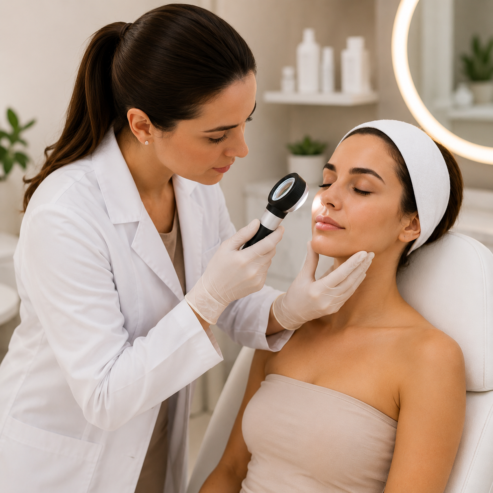

Clinica integrada em Pio XII - MA
Precisão em Ultrassonografia e Excelencia em Dermatologia em Pio XII
Cuidado humano, ambiente acolhedor e uma experiencia desenhada para transmitir confianca desde o primeiro contato ate o acompanhamento.
Agenda agil
Equipe especializada
Atendimento acolhedor

Nossa equipe esta pronta para cuidar da sua saude com excelencia e dedicacao. Escolha o atalho ideal para falar com a UltraDerma.
Especialidades
As duas especialidades que organizam o cuidado da UltraDerma.
A clinica integra ultrassonografia e dermatologia para oferecer diagnostico, orientacao e acompanhamento com mais clareza em cada atendimento.
Ultrassonografia
Exames realizados com foco em precisao diagnostica, agilidade na rotina e leitura objetiva para apoiar condutas com mais seguranca.
- Exames de rotina e acompanhamento clinico
- Avaliacao com linguagem acessivel ao paciente
- Fluxo organizado para um atendimento mais agil

Dermatologia
Cuidado direcionado para pele, cabelos e unhas com avaliacao individual, orientacao proxima e seguimento pensado para cada necessidade.
- Consultas clinicas e acompanhamento da pele
- Prevencao, orientacao e rotina personalizada
- Cuidado continuo com abordagem humanizada
Diferenciais da Clinica
Detalhes que reforcam a confianca do primeiro contato ao pos-consulta.
A UltraDerma foi estruturada para unir imagem forte, acolhimento, eficiencia no fluxo e apresentacao clara das informacoes mais importantes para o paciente.
Atendimento acolhedor
Recepcao, consulta e acompanhamento com linguagem clara e sensacao de cuidado em todas as etapas.
Fluxo eficiente
Organizacao pensada para reduzir atrito, acelerar a jornada e tornar cada visita mais objetiva.
Ambiente elegante
Estrutura visualmente consistente para transmitir seguranca, limpeza e profissionalismo desde a chegada.
Comunicação transparente
Informacoes importantes apresentadas de forma direta para facilitar entendimento e tomada de decisao.
Profissionais
Conheca tres profissionais em destaque da UltraDerma.
Avance os perfis como se estivesse folheando paginas de um livro e veja foto, especializacao, CRM, areas de atuacao e uma apresentacao breve de cada profissional.